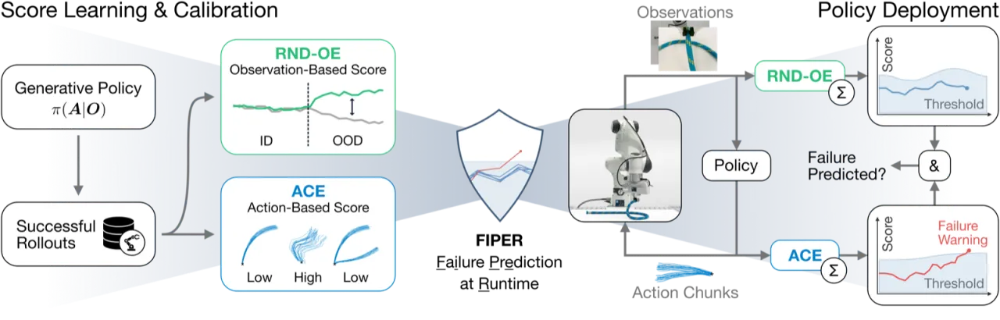
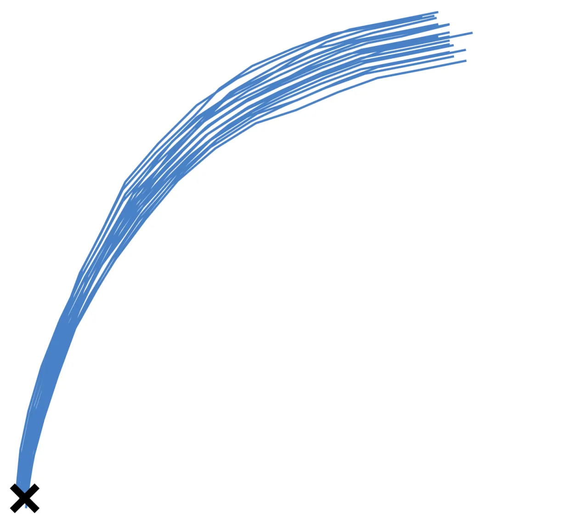
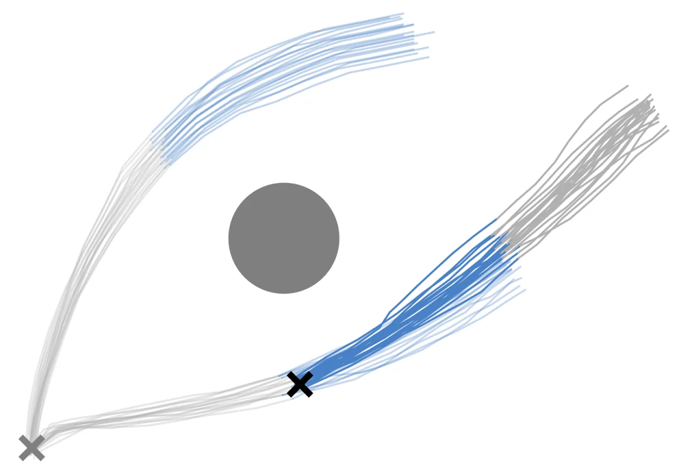
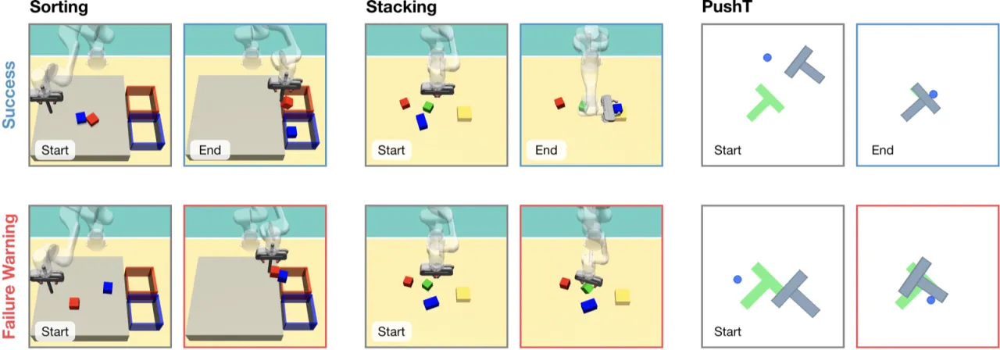
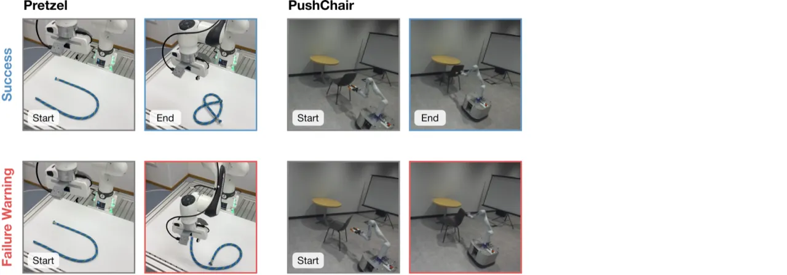

生成式模仿学习策略（扩散模型、flow matching）已能让机器人执行复杂的长时域任务，但分布偏移与动作误差累积仍会导致不可预期的失效行为。FIPER 提出一套轻量级运行时失效预测框架，无需任何失效样本，通过同时检测连续 out-of-distribution (OOD) 观测与高度不确定的动作分布来提前预警，在五个仿真和真实世界任务上达到最高的预测精度与最早的预警时机。
基于生成模型的模仿学习策略（Imitation Learning, IL）在复杂机器人操作任务中取得了显著进展，但它们在现实部署中仍面临严峻的安全挑战：未见过的视觉或状态分布偏移（distribution shift）以及动作预测的误差累积，都可能导致策略产生危险行为甚至任务失败。在面向人类的安全关键环境中，尽早预测此类失效至关重要，以便及时干预或触发安全回退机制。
"Distribution shifts from unseen environments or compounding action errors can still cause unpredictable and unsafe behavior, leading to task failure. Early failure prediction during runtime is therefore essential for deploying robots in human-centered and safety-critical environments."
现有方法存在两类主要缺陷：
关键洞察：真正的任务失效同时伴随着两个信号——连续的 OOD 观测以及动作分布的持续高不确定性。仅关注其中之一会导致误报过多或检测过晚。

FIPER（Failure Prediction at Runtime for generative IL policies）由两个互补子模块组成，分别从观测侧和动作侧检测失效前兆，通过逻辑"与"（AND）组合两者的警告信号，并用 conformal prediction 在少量成功 rollout 上标定各自阈值，实现对误报概率的统计保证。
Random Network Distillation (RND) 最初用于强化学习中的探索激励。FIPER 将其应用于策略的观测嵌入空间（observation embedding space），利用预训练好的策略编码器 h(·)（如 ResNet-18）提取嵌入，再训练一个预测网络 fθ(·) 去拟合随机目标网络 g(·) 在 ID 成功数据上的输出。OOD 样本会使两个网络的输出产生较大偏差，RND-OE 评分 sRND(Ot) = ‖fθ(Ot) − g(Ot)‖² 即量化这一差异。将该评分在大小为 wO 的滑动窗口上聚合，得到观测侧失效预测分 ηO。
生成式策略在成功 rollout 中也可能产生高方差动作（多模态演示），因此方差并不是不确定性的可靠指标。FIPER 通过采样一批动作 At(1..B) ∼ π(·|Ot)，对每个预测步骤计算动作维度上的分箱熵（dimension-wise binning entropy），再对整个 action chunk 求和得到 ACE 评分 sACE(At)。高熵意味着策略"拿不定主意"——无法确定当前应归属哪种行为模式，是潜在失效的前兆。同样在大小为 wA 的滑动窗口上聚合，得到动作侧失效预测分 ηA。
利用 M 条成功 rollout（仿真环境 M = 50，真实世界 M = 10）作为标定数据集 Dc，通过 functional conformal prediction 计算时变阈值 γO,t 和 γA,t。此设计提供统计保证：对于新的成功 rollout τ，FIPER 误报的概率上界为 δ（可调设计参数）：
P(∃t: F(τ:t) = 1) ≤ δ
仅当两个子模块的聚合评分同时超过各自阈值时，FIPER 才触发失效警告：F(τ:t) = FO(τ:t) ∧ FA(τ:t)。逻辑 AND 设计有效抑制误报，同时论文实验表明仍能检出 91% 的真实失效。


在 5 个多样化环境中（3 个仿真：SORTING、STACKING、PUSH-T；2 个真实：PRETZEL、PUSH CHAIR）评测 FIPER，覆盖不同机器人形态、观测/动作空间和 OOD 失效模式。基线包括 PCA-kmeans、logpZO（FAIL-Detect）、STAC（Sentinel）和 RND-A（ReDiffuser）。评测指标：Timestep-wise Accuracy (TWA)、Accuracy、Detection Time (DT)、TPR、TNR。


下表展示 FIPER 与各基线方法的核心指标对比（均值 ± 标准差，五个随机种子）。加粗为最优，下划线为次优。
| 任务 | 指标 | PCA-kmeans | logpZO | RND-A | STAC | FIPER（ours） |
|---|---|---|---|---|---|---|
| SORTING | TWA ↑ | 0.49 | 0.54 | 0.55 | 0.46 | 0.54±0.00 |
| Acc. ↑ | 0.56 | 0.67 | 0.62±0.01 | 0.48 | 0.66±0.00 | |
| DT ↓ | (0.15) | 0.48±0.01 | 0.34±0.03 | (0.46) | 0.32±0.00 | |
| STACKING | TWA ↑ | 0.66±0.00 | 0.58±0.00 | 0.50±0.00 | 0.56±0.01 | 0.62±0.00 |
| Acc. ↑ | 0.75±0.00 | 0.69±0.01 | 0.59±0.00 | 0.66±0.00 | 0.73±0.00 | |
| DT ↓ | 0.19±0.00 | 0.49±0.00 | (0.44±0.01) | (0.38±0.00) | 0.28±0.00 | |
| PUSH-T | TWA ↑ | 0.53±0.00 | 0.52±0.00 | 0.52±0.00 | 0.58±0.00 | 0.55±0.00 |
| Acc. ↑ | 0.58±0.00 | 0.55±0.01 | 0.55±0.01 | 0.71±0.00 | 0.71±0.00 | |
| DT ↓ | (0.11) | (0.26) | (0.20±0.02) | 0.52±0.00 | 0.32±0.00 | |
| PRETZEL | TWA ↑ | 0.64±0.00 | 0.58±0.03 | 0.51±0.05 | 0.51±0.00 | 0.68±0.03 |
| Acc. ↑ | 0.65±0.00 | 0.65±0.04 | 0.53±0.05 | 0.67±0.00 | 0.85±0.00 | |
| DT ↓ | (0.01) | 0.24±0.04 | (0.52±0.36) | 0.44±0.00 | 0.33±0.07 | |
| PUSH CHAIR | TWA ↑ | 0.50±0.00 | 0.78±0.02 | 0.71±0.05 | 0.73±0.00 | 0.83±0.02 |
| Acc. ↑ | 0.50±0.00 | 0.92±0.02 | 0.82±0.05 | 0.88±0.00 | 0.96±0.02 | |
| DT ↓ | (0.00) | 0.26±0.01 | 0.21±0.02 | 0.30±0.00 | 0.27±0.00 | |
| Average | TWA ↑ | 0.57±0.00 | 0.60±0.01 | 0.56±0.02 | 0.57±0.00 | 0.65±0.01 |
| Acc. ↑ | 0.61±0.00 | 0.69±0.01 | 0.62±0.03 | 0.68±0.00 | 0.78±0.00 | |
| DT ↓ | (0.09) | 0.35±0.01 | 0.34±0.09 | 0.42±0.00 | 0.30±0.02 |
括号中的 DT 值（如 (0.15)）表示对应方法的 TPR 或 TNR 低于 0.4，即无法有效区分成功与失败，该检测时间数值无实际参考意义。整体 TPR 达 0.92，说明 FIPER 在多样化环境中可高可靠地预测各类失效。
Table 2 对逻辑组合方式与阈值类型进行消融。AND（逻辑与）组合在所有阈值类型下均优于 OR（逻辑或）组合，在 time-varying 阈值下达到最高 TWA（0.65）、Accuracy（0.78）和 TPR（0.91）。关键结论：
尽管 FIPER 仅使用少量成功 rollout（仿真 50 条，真实世界 10 条）进行标定，但仍然需要额外收集这些数据并训练一个与策略独立的 RND-OE 网络，增加了部署前的准备工作量。作者将此列为方法的主要局限之一。
在本文所考虑的环境中，FIPER 的运行时计算量较小。但对于动作空间维度极高的场景（例如人形机器人），ACE 评分所需的批量采样和熵计算可能带来显著的计算延迟，影响实时性。
本文评测均基于单任务、视觉输入的 IL 策略（Diffusion Policy 和 flow matching）。将 FIPER 扩展至大规模视觉语言动作模型（VLA，如 π0、OpenVLA）、多模态输入（触觉、语言）以及强化学习生成式策略，仍是未来工作方向，尚未在本文中验证。
RND-OE 复用策略的预训练观测编码器 h(·)，因此 FIPER 不适用于以黑盒 API 形式部署的策略。不过，由于 FIPER 不需要访问训练数据本身，作者预期其对未来 VLA 扩展也能较好适用。